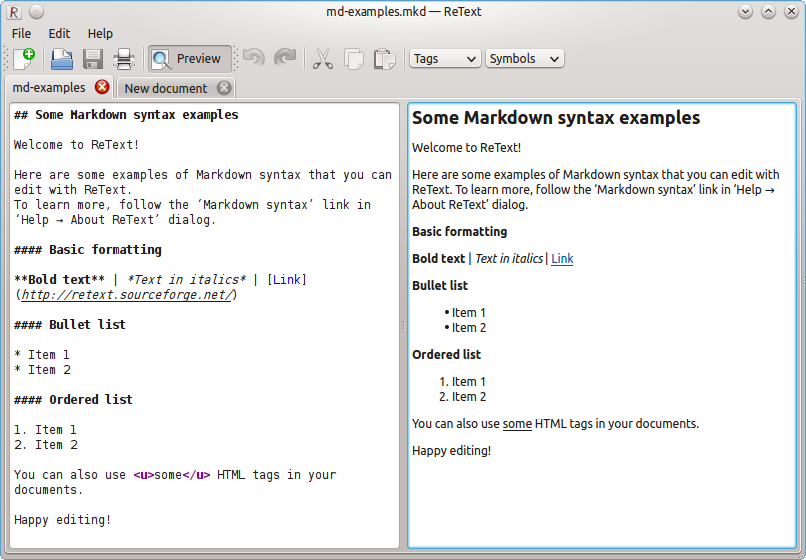

关于
1.1.
Introduction
1.2.
关于 Markdown
1.2.1.
第一个 Markdown 文档
1.2.2.
Hello.md
语法
2.1.
语法
2.1.1.
段落与换行
2.1.2.
标题
2.1.3.
引用
2.1.4.
列表
2.1.5.
代码
2.1.6.
分隔线
2.1.7.
超链接
2.1.8.
图片
2.1.9.
强调
2.1.10.
字符转义
2.2.
扩展语法
2.2.1.
删除线
2.2.2.
代码块和语法高亮
2.2.3.
表格
2.2.4.
Task List
编辑器
3.1.
编辑器与扩展
3.1.1.
MarkdownPad
3.1.2.
Texts
3.1.3.
MarkPad
3.1.4.
MdCharm
3.1.5.
Markdown Edit
3.1.6.
CuteMarkEd
3.1.7.
Haroopad
3.1.8.
Mou
3.1.9.
MacDown
3.1.10.
Markdown Pro
3.1.11.
ReText
3.1.12.
sublime-markdown-extended
3.1.13.
Atom Markdown Preview
3.1.14.
IDEA Markdown
3.1.15.
Cmd Markdown
3.1.16.
StackEdit
3.1.17.
Dillinger
格式转换
4.1.
格式转换
4.1.1.
HTML
4.1.2.
PDF
4.1.3.
Word
Published with GitBook
ReText
ReText
主页:
ReText
平台: Linux
费用: 免费、开源
技术: Python、Qt
介绍
ReText 是一款 Linux 平台上的 Markdown 编辑器，提供了多种文件的导出功能。
截图

results matching "
"
No results matching "
"